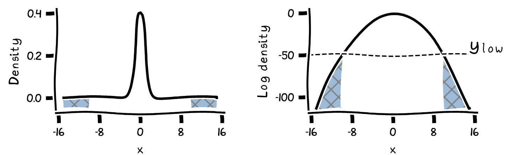
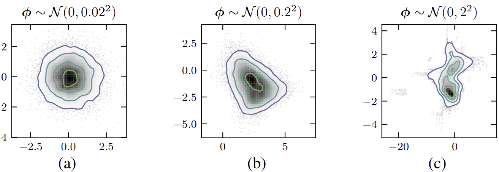
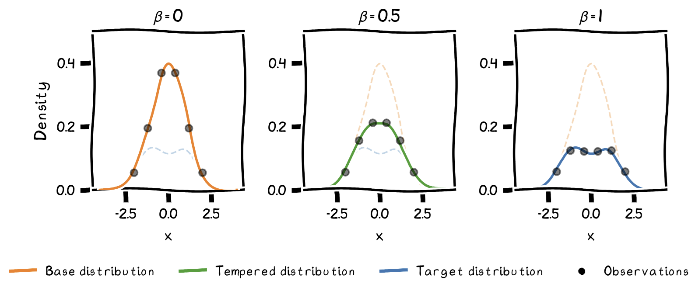
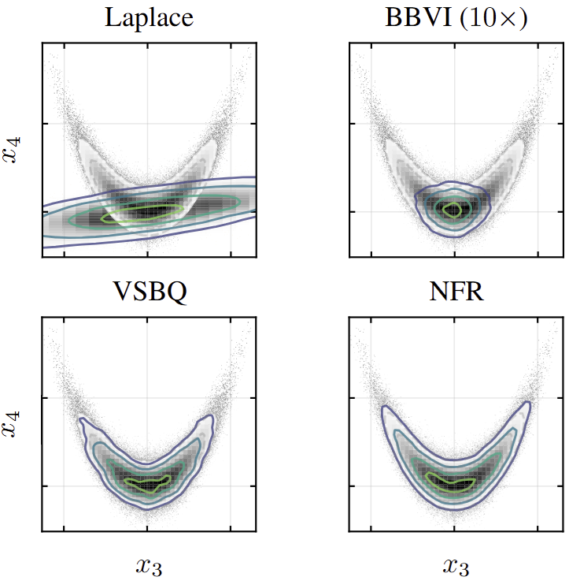

We propose Normalizing Flow Regression (NFR), a novel
offline inference method for approximating Bayesian posterior
distributions using existing log-density evaluations. Unlike traditional
surrogate approaches, NFR directly yields a tractable posterior
approximation through regression on existing evaluations, without
requiring additional sampling or inference steps. Our method performs
well on both synthetic benchmarks and real-world applications from
neuroscience and biology, offering a promising approach for Bayesian
inference when standard methods are computationally prohibitive.
@article{li2025normalizing,
title={Normalizing Flow Regression for Bayesian Inference with Offline Likelihood Evaluations},
author={Li, Chengkun and Huggins, Bobby and Mikkola, Petrus and Acerbi, Luigi},
journal={7th Symposium on Advances in Approximate Bayesian Inference (AABI) - Proceedings track},
year={2025}
}
Introduction
Bayesian inference with computationally expensive likelihood evaluations
remains a significant challenge in scientific domains. When model
evaluations involve extensive numerical methods or simulations, standard
Bayesian approaches like MCMC or variational inference become impractical
due to their requirement for numerous density evaluations.
Practitioners often resort to simpler alternatives like maximum a
posteriori (MAP) estimation, but these point estimates fail to capture
parameter uncertainty. Recent surrogate modeling approaches can
approximate expensive density functions but typically don't directly yield
valid probability distributions, requiring additional sampling or
inference steps.
Our Contribution
We propose Normalizing Flow Regression (NFR), a novel
offline inference method that directly yields a tractable posterior
approximation through regression on existing log-density evaluations.
Unlike other surrogate methods, NFR directly produces a posterior
distribution that is easy to evaluate and sample from.
NFR efficiently recycles existing log-density evaluations (e.g., from
MAP optimizations) rather than requiring costly new evaluations from the
target model. This makes it particularly valuable in settings where
standard Bayesian methods are computationally prohibitive.
Background
Normalizing Flows
Normalizing flows construct flexible probability distributions by
transforming a simple base distribution (typically a multivariate
Gaussian) through an invertible transformation $T_{\boldsymbol{\phi}}:
\mathbb{R}^{D} \rightarrow \mathbb{R}^{D}$ with parameters
$\boldsymbol{\phi}$.
For a random variable $\mathbf{x}=T_{\boldsymbol{\phi}}(\mathbf{u})$ where
$\mathbf{u}$ follows base distribution $p_{\mathbf{u}}$, the change of
variables formula gives its density as:
Bayesian inference uses Bayes' theorem to determine posterior distribution
$p(\mathbf{x} \mid \mathcal{D})$ of parameters $\mathbf{x}$ given data
$\mathcal{D}$:
Standard approximation approaches (VI and MCMC) require many likelihood
evaluations, making them impractical for expensive models. While surrogate
methods can approximate the target (log) density from limited evaluations,
they don't directly yield proper probability distributions, requiring
additional steps to obtain posterior samples. Our approach addresses this
limitation by using normalizing flows as regression models that directly
provide tractable posterior approximations.
Normalizing Flow Regression (NFR)
Key Innovation
NFR directly yields a tractable posterior approximation through
regression on existing log-density evaluations, without requiring
additional sampling or inference steps. The flow regression model
provides both a normalized posterior density that's easy to evaluate and
sample from, and an estimate of the normalizing constant (model
evidence) for model comparison.
Method Overview
We use a normalizing flow with normalized density
$q_{\boldsymbol{\phi}}(\mathbf{x})$ to fit observations of the log density
of an unnormalized target posterior. The log-density prediction of our
regression model is:
where $f_{\boldsymbol{\phi}}(\mathbf{x})=\log
q_{\boldsymbol{\phi}}(\mathbf{x})$ is the flow's log-density, and $C$
accounts for the unknown normalizing constant. We train the model via MAP
estimation by maximizing:
Standard Gaussian likelihood for log-density observations would
overemphasize near-zero density regions at the expense of high-density
regions. We address this with a Tobit likelihood that censors observations
below a threshold $y_{\text{low}}$:

Illustration of the Tobit likelihood's censoring effect.
The shaded region represents censored observations with log-density
values below $y_{\text{low}}$.
Prior Specification and Optimization
We use a multivariate Gaussian base distribution estimated from
high-density observations, and constrain flow transformations to stay
reasonably close to this base distribution setting a prior over flows.

Prior over flows. Example flow realizations sampled
from different priors over flow parameters $\phi$, using a standard
Gaussian as the base distribution. (a) Strong prior $\rightarrow$ too
rigid; (b) Intermediate prior $\rightarrow$ reasonable shapes; (c) Weak
prior $\rightarrow$ ill-behaved distributions.
We follow an annealed optimization approach which gradually fits the flow
to a tempered target across training iterations, providing stability.

Annealed optimization progressively fits the flow to
tempered observations, with inverse temperature $\beta$ increasing over
training iterations.
Output:
Flow $T_{\phi}$ approximating the target, log normalizing
constant $C$
Compute base distribution from observations
For $t \leftarrow 0$ to $T_{\max}$ do:
Set inverse temperature $\beta_{t}$ according to
tempering schedule
Update tempered observations
Optimize $C$ with fixed $\boldsymbol{\phi}$, then
jointly optimize $(\boldsymbol{\phi}, C)$
Experiments
We evaluate our normalizing flow regression (NFR) method through a series
of experiments on both synthetic and real-world problems, comparing its
performance against established baselines.
Experimental Setup
For all experiments, we use log-density evaluations collected during
maximum a posteriori (MAP) optimization runs, reflecting real-world
settings where practitioners have already performed optimization to find
parameter point estimates. We compare NFR against three baselines:
Laplace approximation: A Gaussian approximation using
the MAP estimate and numerical Hessian
Black-box variational inference (BBVI): Using the same
flow architecture as NFR but trained through standard variational
inference with up to ten times more likelihood evaluations ($10\times$)
Variational sparse Bayesian quadrature (VSBQ): A
state-of-the-art offline surrogate method using sparse Gaussian
processes
We evaluate the methods using three metrics: the absolute difference
between true and estimated log normalizing constant (ΔLML), the mean
marginal total variation distance (MMTV), and the "Gaussianized"
symmetrized KL divergence (GsKL).
Results
We tested NFR on five benchmark problems of increasing complexity, from
synthetic test cases to challenging real-world applications. The
consolidated results demonstrate that NFR consistently outperforms
baseline methods across problems of varying dimensionality and complexity.
Problem (Dimension)
Laplace
BBVI (10×)
VSBQ
NFR (ours)
ΔLML↓
MMTV↓
GsKL↓
ΔLML↓
MMTV↓
GsKL↓
ΔLML↓
MMTV↓
GsKL↓
ΔLML↓
MMTV↓
GsKL↓
Rosenbrock-G. (D=6)
1.30
0.24
0.91
1.00
0.24
0.46
0.20
0.037
0.018
0.013
0.028
0.0042
Lumpy (D=10)
0.81
0.15
0.22
0.32
0.046
0.013
0.11
0.033
0.0070
0.026
0.022
0.0020
Timing Model (D=5)
N/A
N/A
N/A
0.32
0.11
0.13
0.21
0.044
0.0065
0.18
0.049
0.0086
Lotka-Volterra (D=8)
0.62
0.11
0.14
0.24
0.029
0.0087
0.95
0.085
0.060
0.18
0.016
0.00066
Multisensory (D=12)
N/A
N/A
N/A
N/A
N/A
N/A
4.1e+2
0.87
2.0e+2
0.82
0.13
0.11
Results across all benchmark problems. Lower values are
better for all metrics. Best results are shown in
dark green, acceptable results in
light green, and poor results in
pink. N/A indicates that the
method was not applicable or computationally infeasible for that problem.
Key Results Highlights

Example contours of the marginal density for the
Multivariate Rosenbrock-Gaussian showing
performance of different methods. Ground-truth samples are in gray.
Synthetic Problems: On the challenging
Rosenbrock-Gaussian distribution (D=6) with its curved correlation
structure, NFR achieves substantially better performance than all
baselines, successfully capturing the complex posterior shape. The
Laplace approximation fails to capture the non-Gaussian structure,
while BBVI struggles with convergence issues.
For the mildly multimodal Lumpy distribution (D=10), NFR again shows
the best overall performance, though all methods except Laplace
perform reasonably well in this case.
Real-World Applications
On real-world problems, NFR demonstrates particular strengths:
Bayesian Timing Model (D=5): Both NFR and VSBQ
accurately approximate this posterior, even with added log-likelihood
estimation noise that makes the problem more challenging and
realistic.
Lotka-Volterra Model (D=8): NFR significantly
outperforms all baselines on this problem with coupled differential
equations, demonstrating its effectiveness on problems with moderate
dimensionality and complex dynamics.
Multisensory Perception (D=12): In our most
challenging test, NFR performs remarkably well where the Laplace
approximation is inapplicable and BBVI is computationally prohibitive.
VSBQ completely fails to produce a usable approximation for this
high-dimensional problem.
Discussion and Conclusions
We introduced normalizing flow regression (NFR), a novel offline inference
method that directly yields a tractable posterior approximation through
regression on existing log-density evaluations, unlike traditional
surrogate approaches that require additional sampling or inference steps.
Normalizing flows offer key advantages for this task: they ensure proper
probability distributions, enable easy sampling, scale efficiently with
evaluations, and flexibly incorporate prior knowledge. Our empirical
evaluation demonstrates that NFR effectively approximates both synthetic
and real-world posteriors, excelling particularly in challenging scenarios
where standard methods are computationally prohibitive.
In the paper's appendix, we also discuss diagnostics to detect failures of
the method, from simple visualizations to Pareto-smoothed importance
sampling.
Limitations and Future Work
While NFR shows promising results, it has limitations: it requires
sufficient coverage of probability mass regions (challenging in dimensions
D > 15-20), depends on evaluations adequately exploring the posterior
landscape, and needs careful prior specification. Future research
directions include:
Developing active learning strategies for sequential evaluation
acquisition
Exploring advanced flow architectures for higher-dimensional problems
NFR represents a promising approach for Bayesian inference in
computationally intensive settings, offering robust, uncertainty-aware
modeling across scientific applications.
Acknowledgments: This work was supported by Research
Council of Finland (grants 358980 and 356498), and by the Flagship
programme:
Finnish Center for Artificial Intelligence FCAI. The authors wish to thank the Finnish Computing Competence
Infrastructure (FCCI) for supporting this project with computational and
data storage resources.
References
Acerbi, L. (2018). Variational Bayesian Monte Carlo.
Advances in Neural Information Processing Systems,
31:8222-8232.
Acerbi, L. (2020). Variational Bayesian Monte Carlo with noisy
likelihoods. Advances in Neural Information Processing Systems,
33:8211-8222.
Blei, D.M., Kucukelbir, A., and McAuliffe, J.D. (2017). Variational
inference: A review for statisticians.
Journal of the American Statistical Association,
112(518):859-877.
Dinh, L., Sohl-Dickstein, J., and Bengio, S. (2017). Density estimation
using Real NVP.
International Conference on Learning Representations.
Gelman, A., Carlin, J.B., Stern, H.S., Dunson, D.B., Vehtari, A., and
Rubin, D.B. (2013). Bayesian Data Analysis (3rd edition). CRC
Press.
Li, C., Clarté, G., Jørgensen, M., and Acerbi, L. (2024). Fast
post-process Bayesian inference with variational sparse Bayesian
quadrature. arXiv preprint arXiv:2303.05263.
Papamakarios, G., Pavlakou, T., and Murray, I. (2017). Masked
autoregressive flow for density estimation.
Advances in Neural Information Processing Systems, 30.
Papamakarios, G., Nalisnick, E., Rezende, D.J., Mohamed, S., and
Lakshminarayanan, B. (2021). Normalizing flows for probabilistic
modeling and inference. Journal of Machine Learning Research,
22(57):1-64.
Ranganath, R., Gerrish, S., and Blei, D. (2014). Black box variational
inference. Artificial Intelligence and Statistics, 814-822.
Rezende, D.J. and Mohamed, S. (2015). Variational inference with
normalizing flows.
Proceedings of the 32nd International Conference on Machine
Learning, 1530-1538.